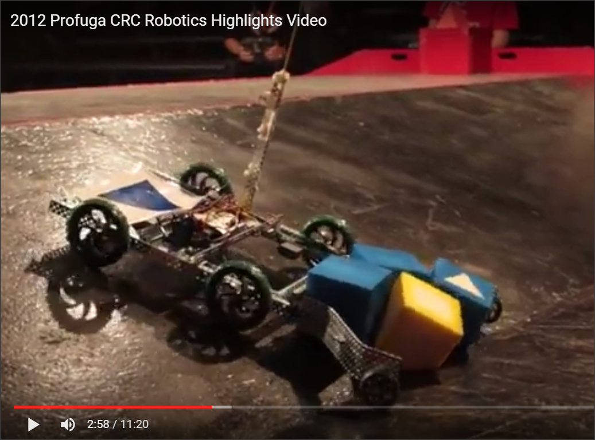

The Defining Journey
Here is my journey through robotics - from my failures to success

Summary
Profuga 2012 - grade 10, first year competing. primative robot, minimal kiosk no website submitted, no journalism done, video homade corney. Results: finished 17th overall, 7th for the robot game in semi-finals, 12th for robot design 20th in kiosk. 24 teams competed
Velostics 2013 - grade 11, second year participating. our moto: "Go big or go Home". found out the hard way about beauracracy. Attempted to Quit the team , lasted for 3 days. Full out kiosk poorly painted, built robot at the competition, video, website, journalism, submitted late. Results: kiosk was 12th, game was 26th (of 27), robot was 24th, website video and journalism were 19th. Utter worst expereince of my life
Actimania 2015 - college year two, did what needed to get done. I kew what i was getting myself into and this time i had a diverse team of people who I could rely on to get tasks done.
The full story
How it all started... Highschool grade 10/secondary 4 ... EST Science with Mr Mallalieu, one of the best teachers I have the chance to learn from, had decided to get the school involved in a robotics competition he saw the year before on the news. The competition was held by CRC Robotics and called Profuga 2012. At forat the Robotics team was made of the graduating years nerds who were took over the program; with the interest of having the program last the teachers decided a better plan was to get my grade invovled soo there would be a year of learnging followed by a year of transition of our experiences to the lower grades. My science teacher encourage myself and two friends to join in addition to a fellow peer of ours. So a month in and a quater of a robot built with never seeing the game or getting an explination we got to work. What we were given from the CRC as a part of the entrence kit was a VEX robotics kit and 5 motors. The older kids left of drawings of the game feild and notes they took, so ke knew the playing feild had a large ramp in the middle and we had to get over it.
So we set out to beuind the best robot that would be there! we know knowing of how to wire the motors so those when back into the parts bin. The vext was easy to work with, so we took the two longest peices the two second logest peices and made a retagular frame. Coming back from Christmas break we put the motors and wheels close to the edges so it would get over the ramp. Next thing we noticed we had 4 days for the deadline to present a video, website and journalize in both french and english; the video got done, a cheap home video production filmed with my friends iPhone we were Indiana Jones stealing foam cudes and placing triangles on totems running from a robot (that was pulled by a rope). Went went back to the robot after goofing off for a few days and put the interface on the robot with the rest of the electronics. The very first time i saw code was watch my peer who had experience with C making our robot come to life. With two days left to spare we started to build our epic kiosk. We went with a news themed back ground with fancy 8x11 printed blocks about the school and other requested information. the kiosk was a banner frame made from 3 2x4s our teacher got us which we painted black with old paint.
The day of the competition, it was held at Vanier College this year so we loaded eveything into my teammate's father's pick up truck and arrived at our staging time. Unloading at the front door of the gym building was another school bringing our massive 4x8 plywood walls framed with 2x4s... we unloaded everything, just four members. Once we entered we had to sign up, than we went to find our kiosk spot. There was a dozen schools already there setting up massive kiosk like the one we saw being brought in. One of our neighbors was the school unloading when we arrived, MacDonald highschool. Ghostbusters homebase was the theme for thier kiosk and they had the whole side of an old 90s SUV on the wall, the pricks they painted looked real they had lights and TVs and iPads set up. Totally trumping our patetic kiosk. Thier robot was massive, the max size, from what we saw while it sat their covered with a trap. As the morning became afternoon more schools arrived with similary jaw dropping set ups... only a hand full looked as ill prepared as we were. Openning cermony had all the robots parade through around the playing feild. We had to carry ours because it was slowly than a turtle while others drove at minimum speed so not to run anyone over.
The first game was held an hour after the opening ceramony. My first game was 6th one of the day, we had a few minutes of practice on Mac's half feild and we figures i had to drive diagnoally up the ramp to get over and it would take 40seconds to cross the feild- so i could move 12-15 cubes in the 5 minute game. With the robot on the feild ready to go. The horn rang, and i slammed hte joysticks forward, the robot took off at the slow as hell rate of 2.1km/hr. We had gone with tank drive so it be easire to turn and it had nice control. I completed 2 trips in the first game and my team won, because my team mate did all the work and the other team's robots couldn't get over the ramp. When we got back to our kiosk all excited over our first win, we were greated by our team mate from that game who wanted to help us they notice our scope was drapping when we turned slowing us down and bending it out of shape, so they gave us two omni-wheels which have two degrees of movement. After 3 more win and two losses we passed the preliminaries in 12th place. The hosting school came to us can gave us a claw to get the flags! it took us two more hours to attach that on the back of our robot, wire it and have our coding team member to update the code.
After the competition when we got back to school monday, we all knew we were going to go big, we wanted to go big after seeing how impressive everyone else was... Winning seventh in the game was a huge reward for a first year school with no clue what we were doing. We left not only with our head held high but filled with new ideas. the Mac kids, namely my new friend Josh, showed us how to wire the drill motors make switches and a few other tricks, we were ready to try them out. Two weeks late, my school and Mac were invited to an adminastrators meeting to share our expereince - to get more money was really why we were there but lets pretend not. The schoolboard set asside money for the next year and my school was awarded 2000$ for the following year. Great news at first it quickly became the nightware of year 2.
Summer Came around and we had planned out everything over the last month. We appraoched the teachers about buying the 2x4s, plywood, and paint allow with materials. The teachers said no, they wanted us to have blueprints. The next day we drafted up the blue prints for our kiosk and showed it to the teachers. once again they said no, they wanted us to do something less involved because we didnt have the expereince. They teachers proposed a PVC frame with drapes that we could decorate. Despite this being easier its not what make us the most competive and most likely to win- the big comprise was swapping the plywood for canvas making everything simpler and lighter to carry. The teachers stalled us until school ended and they were unavaible to come into school so we could have meetings. Summer went by and we came back to school, took a few weeks but we had a first meeting, and we were right back to square one, we recruited new kids and than filled them in on our plans. Going back to the teachers they stuck to their guns and disagreed with what we wanted to do. Novemeber rolled around and it was kickoff for the next year's competition, Velistic... which sounds like velocity and balistics. Turns out our expectations were on point, Soft squishy foam balls to be launched at stop signs increasing in difficulty gaining more points. With no kiosk and more of my friends roped into helping we began plotting out the our robot design, suggestions from elephant that inhaled and exhaled balls to air cannons were presented and loved by the teachers, the best I had was a baseball launcher but that was overrulled by the teachers because it was "unsafe". My compromise was a belt launcher with a tube for aiming, so thats what the teachers said fine to but stalled on buying the neccessary materials. Weeks pasted by and we still had noting but plans, and the money the teams was given was held by the teachers in a student run program. Everysingle day, speaking to the teachers kept giving us new excuses for not doing their part to purchase the materializes we asked for... In the mean time, we made more plans...
Chrsitmas break came and went by with nothing happening for robotics, lord and be hold the teachers forgot everything I spent the last few months of conviencing them, going back to suggsting a kiosk made of PVC and fabric cloth was the best idea. so I quit the team, its hard to convey they faustrations, angry, and disappointment i felt, but someone was dangle my dreams infront of my and pulling it back everytime I got close enough. My science teacher kept me upto date with what was going on, and my homeroom teacher was the one who delt with the school boards administration, then there was all my freinds who just acted like I didnt quit - I guess they knew how well me quiting would go - so i didnt miss anything... The day I quit the teachers were forced to order the lumber, which arrived two days later. After having been off the team for 71.5hrs i was back helping my science teacher cut all the 2x4s. All the frames got finished in two evenings, the canvas took another. the rest i left to my team members, it was only a week for the grad ski trip which the majority robot dividion was going on... So my fther and I at home on our own time, laid out the ground work for a chasi design, wheel and motor monts all made from scrap wood and Vex metal Next we made our wheels, attaching bicycle gears with bolts to plastics wheels from rona.
The template I gave them to my father to duplicate at his work out of aluminum (shout out to his cooworker who weldied it), this worked out well because it took most of the time I was gone on my ski trip. When I returned some of my team members made the video and finished the website on wix - theses were soo awfully i couldnt describe them becuse i ereased them from my memory, but I will not discredit their hard work becuse I am gratefully they did not drop the ball. That weekend we returned, we sreted off on the easier components a collector to gather balls which was a rode with tip ties that spun to and flick balls into the frame. The next component was a trap door to direct balls to the cannon. My out of sheet metal dad at work took a belt for an enginge and made paddles which he attached to the belt with rivits. Making progress, my science teacher bought us a PVC tube which we cut and put the belt in the cut out. there was a huge issue we couldnt turn it when there was a ball inside... taking the robot home to come up with a new idea, i showed my dad what was wrong. Now because foam squishy balls arent made to be shot out of a cannon, in fact they dont roll on smooth surfaces like the inside of a PVC pipe made ofr water - they get stuck and drag. It was the last week of January, barely a week until the competiton before the teachers finally realized the design wasnt going to work. The robot was pretty much build, only missing wiring and electronics but it was never going to work. So we went to finish the kiosk, my team members had painted all the walls but our roman-greek temple of wisdom was more like a kids drawing. My grandfather had built a